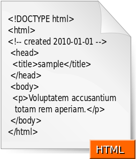

HTML
HTML (от англ. HyperText Markup Language — «язык гипертекстовой разметки») — стандартизированный язык разметки документов во Всемирной паутине. Большинство веб-страниц содержат описание разметки на языке HTML (или XHTML). Язык HTML интерпретируется браузерами; полученный в результате интерпретации форматированный текст отображается на экране монитора компьютера или мобильного устройства.
Разделы
Общее представление
Язык HTML был разработан британским учёным Тимом Бернерсом-Ли приблизительно в 1986—1991 годах в стенах ЦЕРНа в Женеве в Швейцарии. HTML создавался как язык для обмена научной и технической документацией, пригодный для использования людьми, не являющимися специалистами в области вёрстки. HTML успешно справлялся с проблемой сложности SGML путём определения небольшого набора структурных и семантических элементов — дескрипторов.
Версии:- HTML 0.9;
- RFC 1866 — HTML 2.0, одобренный как стандарт 22 сентября 1995 года;
- HTML 3.2 — 14 января 1997 года;
- HTML 4.0 — 18 декабря 1997 года;
- HTML 4.01 (изменения, причём более значительные, чем кажется на первый взгляд) — 24 декабря 1999 года;ISO/IEC 15445:2000 (так называемый ISO HTML, основан на HTML 4.01 Strict) — 15 мая 2000 года;
- ISO/IEC 15445:2000 (так называемый ISO HTML, основан на HTML 4.01 Strict) — 15 мая 2000 года;
- HTML5 — 28 октября 2014 года;
- HTML 5.1 начал разрабатываться 17 декабря 2012 года. Рекомендован к применению с 1 ноября 2016 года.
Браузеры
Текстовые документы, содержащие разметку на языке HTML (такие документы традиционно имеют расширение .html или .htm), обрабатываются специальными приложениями, которые отображают документ в его форматированном виде.
Такие приложения, называемые «браузерами» или «интернет-обозревателями», обычно предоставляют пользователю удобный интерфейс для запроса веб-страниц, их просмотра (и вывода на иные внешние устройства) и, при необходимости, отправки введённых пользователем данных на сервер. Наиболее популярными на сегодняшний день браузерами являются Google Chrome, Mozilla Firefox, Opera, Internet Explorer и Safari.
| Engine | IE | Edge | Chrome | Opera | Firefox | Safari |
|---|---|---|---|---|---|---|
| Layout | Trident v7.0 | EdgeHTML | Blink | Geco, Webkit | webkit | |
| JavaScript | Chakra | V8 | SpiderMonkey | Nitro | ||
Структура HTML-документа
<!DOCTYPE html>
<html lang="en">
<head>
<meta charset="UTF-8">
<title>Заголовок документа</title>
</head>
<body>
Тело документа
</body>
</html>